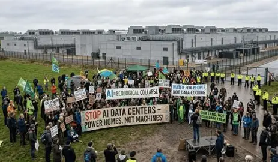
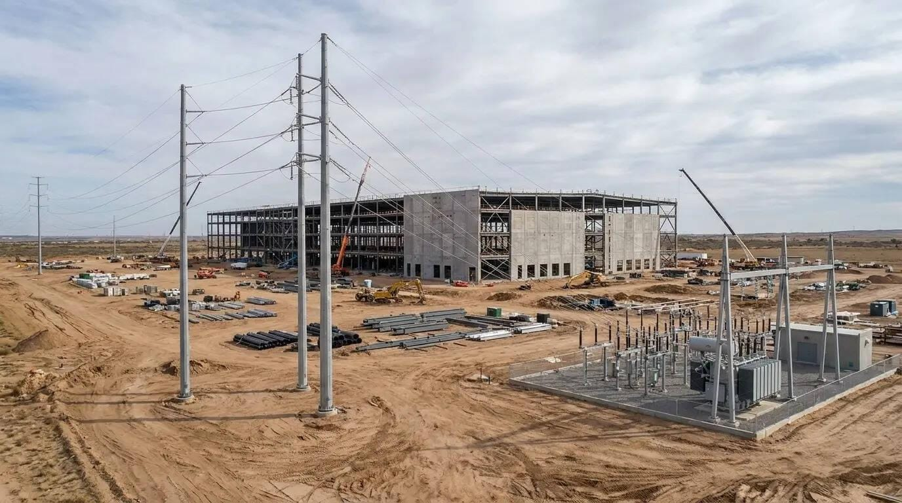
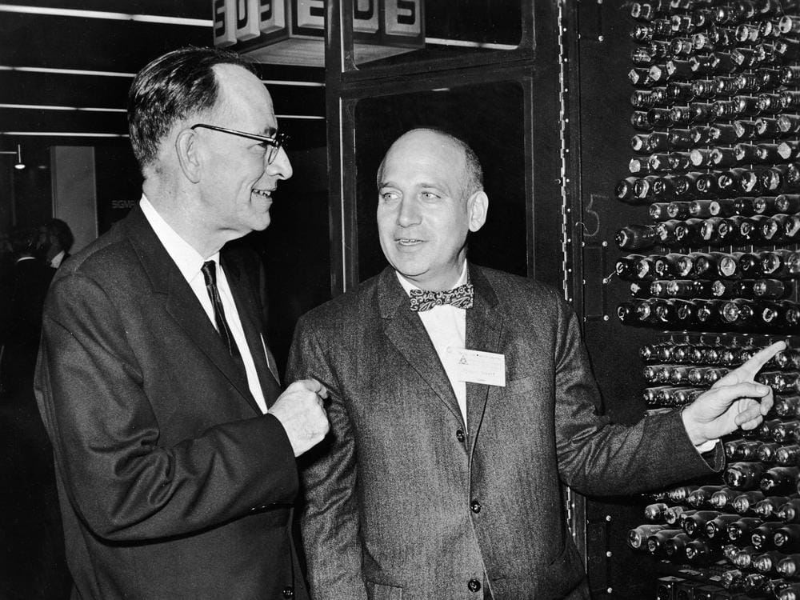

Data centers
Estados Unidos discutem novas regras para construção de data centers
O Congresso dos Estados Unidos começou a discutir uma proposta de lei para acelerar a autorização de novas instalações de energia e linhas de transmissão. A proposta também prevê que grandes empresas responsáveis por data centers contribuam mais com os custos de melhorias na rede elétrica, devido ao aumento do consumo provocado pela expansão dessas estruturas.

Manifestantes foram às ruas de Edimburgo contra a construção de grandes centros de processamento de dados voltados à inteligência artificial. A população teme impactos ambientais, aumento do consumo de energia e pressão sobre os recursos naturais.
Saiba Mais
O crescimento dos data centers voltados à inteligência artificial preocupa os Estados Unidos devido ao alto consumo de energia e água, além dos impactos ambientais.
Saiba Mais
John Mauchly e J. Presper Eckert foram os principais responsáveis pelo desenvolvimento do ENIAC, um dos primeiros computadores eletrônicos de uso geral. Seu trabalho ajudou a abrir caminho para a infraestrutura computacional que evoluiu até os Data Centers modernos.
Data Centers são instalações que abrigam servidores, sistemas de armazenamento e equipamentos de rede. Eles permitem que sites, aplicativos, serviços em nuvem e diversas plataformas digitais funcionem continuamente.
Saiba Mais